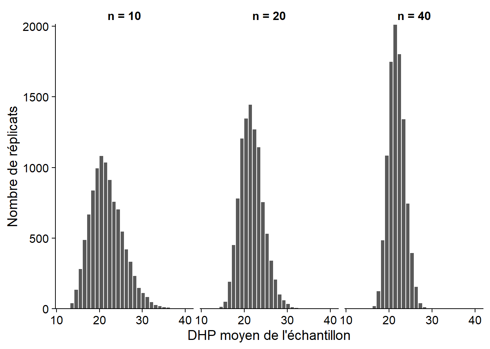
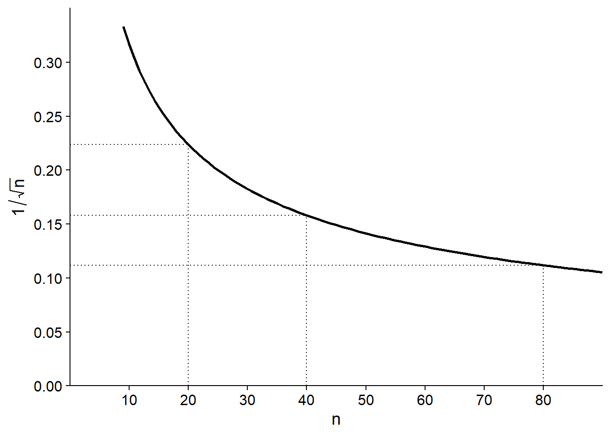

Échantillonnage et estimation de paramètres
8 septembre 2020
Objectifs
Estimer la moyenne et la variance d’une population à partir d’un échantillon.
Définir le biais et l’erreur-type d’un estimateur.
Calculer les propriétés d’un estimateur en simulant l’échantillonnage.
Décrire les avantages et inconvénients de différentes méthodes d’échantillonnage.
Choisir une méthode d’échantillonnage en fonction des caractéristiques de la population à étudier.
Statistiques, paramètres et estimateurs
Au dernier cours, nous avons vu une série de statistiques descriptives: moyenne, variances, quantiles et autres. De façon générale, une statistique est une quantité calculée à partir d’observations de variables aléatoires.
Un paramètre est une caractéristique de la population qui n’est pas mesurée directement. Comme nous verrons dans le prochain cours, ces paramètres font souvent partie d’un modèle statistique visant à décrire la variation d’une variable aléatoire.
Dans ce cours, notre but principal sera de déterminer dans quelle mesure une statistique calculée à partir des observations constitue un bon estimateur d’un paramètre donné.
Par exemple, si on mesure le poids d’écureuils roux et qu’on fait la moyenne de ces mesures (une statistique), quel est l’estimé du poids moyen de la population locale d’écureuils roux (un paramètre)? Quelle est sa marge d’erreur?
En général, un paramètre demeure une quantité théorique. Dans notre exemple, même si on pouvait recenser tous les écureuils, le poids des individus varie constamment et la composition de la population aussi (en raison des naissances, décès et migrations).
Estimation de paramètres
Estimation de la moyenne
Supposons qu’on mesure une variable \(x\) sur un échantillon de \(n\) individus choisis aléatoirement dans une population, c’est-à-dire que chaque individu a une chance égale de faire partie de l’échantillon.
Nous nous servons de la moyenne de l’échantillon:
\[\bar{x} = \frac{1}{n} \sum_{i = 1}^{n} x_i\]
comme estimateur du paramètre \(\mu\), qui dénote la moyenne de \(x\) dans la population entière.
Note: Suivant une convention commune en statistiques, les paramètres sont représentés dans ce cours par des lettres grecques, tandis que les variables ou statistiques sont représentées par des lettres latines.
Une façon de déterminer les propriétés d’un estimateur est de simuler l’échantillonnage à partir d’une population connue.
Par exemple, supposons que le tableau de données de 1161 arbres du Parc Kejimkujik, vu au dernier cours, représente la population entière et que nous échantillonnons une partie de ces arbres.
kejim <- read.csv("../donnees/cours1_kejimkujik.csv")
dhp <- kejim$dhp
paste("La population a un DHP moyen de", round(mean(dhp), 2), "cm avec un écart-type de", round(sd(dhp), 2), "cm.")## [1] "La population a un DHP moyen de 21.76 cm avec un écart-type de 12.25 cm."Dans R, la fonction sample sert à tirer un échantillon aléatoire des éléments d’un vecteur.
mean(sample(dhp, 20)) # DHP moyen d'un échantillon de n = 20 arbres## [1] 20.86La fonction replicate permet de répéter la même commande plusieurs fois; ainsi, nous pouvons facilement générer plusieurs moyennes provenant de différents échantillons possibles.
# le premier argument de replicate donne le nombre de répétitions
replicate(5, mean(sample(dhp, 20))) ## [1] 19.5500 18.4800 20.3075 22.2800 24.4250La moyenne d’un échantillon est donc elle-même une variable aléatoire. Plus nous simulons un grand nombre d’échantillons, plus la distribution des valeurs résultantes est représentative de la probabilité d’obtenir différentes valeurs de cette moyenne.
Les histogrammes ci-dessous montrent la distribution (estimée à partir de 10 000 simulations) du DHP moyen avec une taille d’échantillon \(n\) = 10, 20 ou 40.

À mesure que la taille de l’échantillon augmente, la distribution devient moins dispersée, mais aussi plus symétrique. Au prochain cours, nous verrons qu’elle s’approche en fait d’une distribution normale lorsque \(n\) est assez grand.
Pour une variable \(x\) dont la distribution a une moyenne \(\mu\) et une variance \(\sigma^2\), on peut démontrer que \(\bar{x}\) a une moyenne égale à \(\mu\) et une variance égale à \(\sigma^2 / n\). L’écart-type de \(\bar{x}\), qu’on appelle dans ce contexte l’erreur-type (standard error), est donc inversement proportionnel à la racine carrée de \(n\).
Erreur-type de la moyenne: \[\sigma_{\bar{x}} = \frac{\sigma_{x}}{\sqrt{n}}\]
La moyenne et l’erreur-type de \(\bar{x}\) calculées à partir des 10 000 échantillons simulés ci-dessus concordent avec les prédictions théoriques.
| n | Moyenne (cm) | Erreur-type (cm) | \(\sigma / \sqrt{n}\) |
|---|---|---|---|
| 10 | 21.77 | 3.86 | 3.87 |
| 20 | 21.76 | 2.74 | 2.74 |
| 40 | 21.76 | 1.89 | 1.94 |
Puisque la moyenne de l’estimateur correspond à la valeur du paramètre \(\mu\) estimé, \(\bar{x}\) est un estimateur non-biaisé de \(\mu\).
Écart-type ou erreur-type
Il est important de ne pas confondre l’écart-type de \(x\) avec l’erreur-type d’un estimateur, comme \(\bar{x}\). L’écart-type de \(x\) mesure la dispersion des valeurs individuelles de la variable par rapport à leur moyenne. L’erreur-type de \(\bar{x}\) mesure la dispersion de la moyenne d’un échantillon par rapport à la moyenne de la population. L’erreur-type diminue avec la taille de l’échantillon.
Puisque l’erreur-type diminue selon \(\sqrt{n}\) plutôt que \(n\), si on veut diminuer cette erreur-type de moitié, il faut multiplier la taille de l’échantillon par 4.

Notez aussi que l’erreur-type dépend seulement de la taille de l’échantillon, pas de celle de la population. Cela est vrai tant que l’échantillon est petit par rapport à la population. Lorsqu’on échantillonne une fraction significative de la population (disons plus de 5%), l’erreur-type réelle est plus petite que \(\sigma / \sqrt{n}\).
Estimation de la variance
Pour estimer la variance \(\sigma^2\) d’une variable \(x\), on pourrait calculer la variance de l’échantillon avec l’équation vue au dernier cours.
\[s^2 = \frac{1}{n} \sum_{i = 1}^n \left( x_i - \bar{x} \right)^2 \]
Ici, la variance d’un échantillon est notée \(s^2\) pour la différencier de \(\sigma^2\), le paramètre représentant la variance de la population.
Comme auparavant, nous testons cet estimateur en simulant 10 000 échantillons du vecteur de DHP avec \(n\) = 10, 20 et 40. Le tableau suivant montre la moyenne de \(s^2\) et son ratio avec la valeur de \(\sigma^2\) pour la population (150.1 cm\(^2\)).
| n | Moyenne de \(s^2\) (cm\(^2\)) | Moyenne de \(s^2\) / \(\sigma^2\) |
|---|---|---|
| 10 | 136.3 | 0.90 |
| 20 | 143.1 | 0.95 |
| 40 | 146.6 | 0.97 |
Ce résultat montre que la variance de l’échantillon ainsi calculée sous-estime systématiquement la variance de la population. Il s’agit donc d’un estimateur biaisé. Pourquoi est-ce le cas?
Le problème est que l’estimateur \(s^2\) n’est pas basé sur la moyenne de la population, mais sur son estimé \(\bar{x}\) calculé à partir du même échantillon. Par définition, l’échantillon est toujours centré sur \(\bar{x}\), mais \(\bar{x}\) est à une certaine distance de \(\mu\). Donc, les écarts carrés à \(\mu\) sont un peu plus grands que les écarts à \(\bar{x}\).
En fait, l’estimateur défini ci-dessus sous-estime la variance de la population dans un ratio \((n-1)/n\), comme le montre la dernière colonne du tableau (0.9 = 9/10, 0.95 = 19/20). Dans ce cas, on peut corriger le biais en multipliant l’estimateur par \(n/(n-1)\), ce qui donne l’estimateur non-biaisé:
\[s^2 = \frac{1}{n - 1} \sum_{i = 1}^n \left( x_i - \bar{x} \right)^2\]
Sa racine carrée constitue un estimateur pour l’écart-type de la population:
\[s = \sqrt{\frac{1}{n - 1} \sum_{i = 1}^n \left( x_i - \bar{x} \right)^2}\]
Contrairement à \(s^2\), l’estimateur \(s\) pour l’écart-type est biaisé, mais il demeure le plus utilisé, puisqu’il n’existe pas de formule aussi simple et non biaisée pour l’écart-type.
Finalement, on utilise aussi \(s\) comme estimateur de \(\sigma\) pour le calcul de l’erreur-type de \(\bar{x}\); donc cette erreur-type est estimée par \(s / \sqrt{n}\).
Degrés de liberté
Une autre façon d’expliquer la division par (\(n - 1\)) dans le calcul de \(s^2\) fait appel au concept de degrés de liberté.
Le nombre de degrés de liberté correspond au nombre de données indépendantes utilisées dans le calcul d’une statistique. Ici, \(s^2\) est calculée à partir des déviations entre chaque observation de \(x\) et leur moyenne (\(x_i - \bar{x}\)). Comme nous avons vu au premier cours, la définition de \(\bar{x}\) assure que la somme de ces déviations est égale à 0. Dans ce cas, lorsqu’on connaît les \(n - 1\) premières déviations, on peut automatiquement déduire la dernière, qui n’est donc pas une donnée indépendante.
Biais et erreur-type d’un estimateur
Les notions de biais et d’erreur-type ont été présentées brièvement plus haut.
Plus généralement, si on estimons un paramètre \(\theta\) (ex.: \(\mu\)) avec un estimateur \(\hat{\theta}\) (ex.: \(\bar{x}\)), on peut décomposer l’erreur carrée moyenne (mean square error) entre \(\hat{\theta}\) et \(\theta\) en deux composantes. Note: Dans l’équation ci-dessous, la fonction \(E[]\) est une autre façon de représenter l’opération de la moyenne.
\[ E[(\hat{\theta} - \theta)^2] = E[(\hat{\theta} - E[\hat{\theta}])^2] + (E[\hat{\theta}] - \theta)^2 \]
Cette équation nous dit que l’écart carré moyen entre un estimateur et le paramètre est la somme de:
l’écart carré moyen entre l’estimateur et la moyenne de l’estimateur (autrement dit, la variance de l’estimateur, ou le carré de son erreur-type);
le carré de l’écart entre la moyenne de l’estimateur et le paramètre (cet écart est le biais);
Donc, on a la relation suivante: Erreur carrée moyenne = (Erreur-type)\(^2\) + (Biais)\(^2\).
Ces deux sources d’erreur ont des propriétés différentes. L’erreur-type est due à la taille limitée de l’échantillon et diminue lorsque \(n\) augmente. Le biais est une erreur systématique qui ne dépend pas de la taille de l’échantillon, mais peut être dû à un estimateur biaisé où à un échantillonnage non représentatif de la population.
Exercice
Afin d’estimer la densité moyenne du bois de pin gris sur un site, vous échantillonnez d’abord 9 arbres, qui ont une densité moyenne de 450 kg/m\(^3\) avec un écart-type de 90 kg/m\(^3\).
Quelle est l’erreur-type de cette moyenne?
Si vous vouliez connaître la moyenne avec une erreur-type d’au plus 10 kg/m\(^3\), combien d’arbres vous attendez-vous à devoir échantillonner?
Méthodes d’échantillonnage
Le méthodes d’échantillonnage définissent des critères pour obtenir un échantillon qui soit représentatif d’une population pour la variable qu’on souhaite mesurer.
La représentativité peut être définie comme une absence de biais: même si la distribution des valeurs change d’un échantillon à l’autre, en moyenne, cette distribution correspond à celle de la population entière.
De plus, nous voulons une méthode d’échantillonnage efficace, c’est-à-dire qu’elle nous permet d’estimer une caractéristique de la population avec la précision maximale pour une quantité de ressources (temps, argent) donnée.
Exemple
Le chaga (Inonutus obliquus) est un champignon parasite du bouleau qu’on retrouve en forêt boréale. Généralement préparé en infusion, il est recherché notamment pour sa grande concentration en antioxidants qui apporterait des bénéfices sur la santé.

Imaginez avoir la tâche de réaliser un plan d’échantillonnage pour estimer l’abondance du chaga et la possibilité de récolte commerciale dans une région de 120 km\(^2\) (12 000 hectares) au nord-ouest de Rouyn-Noranda. Comment disposerez-vous vos unités d’échantillonnage (placettes) dans ce territoire? Vous avez à votre disposition une carte écoforestière montrant la distribution des peuplements forestiers par espèce dominante.

Échantilonnage aléatoire simple
Dans un échantillonnage aléatoire simple, chaque individu ou unité d’observation a la même probabilité de faire partie de l’échantillon.
Pour ce type d’échantillonnage, la moyenne d’une variable dans l’échantillon est un estimateur non-biaisé de la moyenne de cette variable dans la population et son erreur-type est donnée par la formule vue précédemment dans ce cours.
Dans notre exemple, nous choisissons 20 points aléatoires dans l’aire d’étude pour y situer des placettes de 50 m x 50 m (l’unité d’échantillonnage).

Avantages
C’est la méthode la plus simple permettant d’obtenir un échantillon représentatif.
Elle ne requiert pas de connaissances particulières sur la structure de la population.
Inconvénients
Par hasard, les points d’un échantilon donné peuvent être concentrés dans une certaine partie de la population.
Comme nous allons le voir, d’autres méthodes peuvent être plus efficaces selon la situation.
Échantillonnage stratifié
On divise la population ou l’aire d’étude en strates, puis on effectue un échantillonnage aléatoire simple dans chaque strate.
Par exemple, au lieu de choisir placer aléatoirement 20 placettes dans l’aire d’étude, on pourrait en placer 4 dans chacun des 5 types de peuplement.
Cette méthode est utilisée lorsqu’on croit que la variable mesurée varie plus entre individus de strates différentes qu’entre individus d’une même strate.
Supposons qu’on divise la population en \(m\) strates et qu’on calcule la moyenne de \(x\) pour l’échantillon aléatoire pris dans chaque strate. Dans ce cas, l’estimateur de la moyenne globale de \(x\) est un moyenne pondérée des moyennes de chaque strate.
\[\bar{x} = \sum_{j = 1}^{m} w_j \bar{x}_j\]
Et l’erreur-type de cette moyenne correspond à:
\[s_{\bar{x}} = \sqrt{\sum_{j = 1}^{m} w_j^2 \frac{s_j^2}{n_j}}\]
Dans ces équations, \(n_j\) est le nombre d’observations dans l’échantillon de la strate \(j\), \(\bar{x}_j\) est leur moyenne et \(s_j^2\) est leur variance. Notez que la fraction \(s_j^2 / n\) est la variance de la moyenne de la strate \(j\).
Le poids \(w_j\) d’une strate est la fraction de la population ou de l’aire d’étude contenue dans cette strate. Par exemple, si le quart de l’aire d’étude fait partie de la première strate, \(w_1\) = 0.25.
Plus les valeurs de \(x\) sont homogènes dans chaque strate et différentes entre les strates, plus l’échantillonnage stratifié sera efficace (estimation plus précise de la moyenne) par rapport à l’échantillonnage aléatoire simple avec le même \(n\) total.
Toutefois, cette efficacité dépend aussi du choix de la taille de l’échantillon dans chaque strate.
On peut échantillonner chaque strate en proportion de son poids \(w_j\) dans la population. Si la variance est la même dans chaque strate, ce choix maximise la précision de la moyenne estimée.
Si on sait que la variable varie davantage dans certaines strates, on peut sur-échantillonner celles-ci par rapport à leur poids \(w_j\).
Si certaines strates sont plus difficiles ou coûteuses à échantillonner, il est possible qu’on doive les sous-échantillonner par rapport à leur poids.
Si on s’intéresse non seulement à la moyenne globale, mais aussi à la moyenne par strate, il faut un nombre suffisant d’échantillons dans chaque strate, donc les plus petites strates seront sur-échantillonnées par rapport à leur poids \(w_j\).
Avantages de l’échantillonnage stratifié
Estimation plus efficace lorsque la distribution de la variable mesurée diffère de façon importante entre les strates.
Avec un échantillon suffisant, on obtient non seulement un bon estimé de la moyenne globale, mais aussi par strate.
Inconvénients
Cette méthode demande une certaine connaissance de la variation de la variable dans la population afin d’établir des strates pertinentes.
Le résultat peut être biaisé si les poids utilisés ne correspondent pas aux proportions réelles de chaque strate dans la population.
Échantillonnage systématique
Pour cette méthode, les points d’échantillonnage sont pris à intervalles réguliers dans l’espace, sur une grille. Il est important de choisir aléatoirement (autant que possible) l’origine de la grille.
Dans notre exemple, nous choisissons un premier point aléatoire dans un carré de 2 km x 2 km au nord-ouest de l’aire d’étude, puis nous plaçons les points subséquents sur une grille avec 2 km entre points successifs.

Imaginons que la variable qui nous intéresse est influencée par un gradient spatial, par exemple une variation de température, de pente ou d’humidité graduelle d’un bout à l’autre de l’aire d’étude. Dans ce cas, les valeurs de \(x\) varient davantage entre points éloignés qu’entre points rapprochés. Ainsi, on a avantage à disperser les points suffisamment dans l’espace, spécialement le long du gradient, pour obtenir un échantillon représentatif de l’aire d’étude en entier.
Le principe est semblable à l’échantillonnage stratifié, où l’on répartissait les points entre strates pour que chaque strate soit bien représentée. Pour l’échantillonnage systématique, on répartit les points le long des axe \(x\) et \(y\) pour que toutes les portions du gradient spatial de l’aire d’étude soient bien représentées.
Avantages
- Plus efficace que l’échantillonnage aléatoire simple si la variable est influencée par un gradient spatial.
Désavantages
Il n’est parfois pas pratique de placer les points à intervalles réguliers (ex.: aire d’étude de forme irrégulière, endroits inaccessibles).
Si on veut une estimation non seulement de la moyenne, mais aussi de la variance de \(x\), alors il faut répéter l’échantillonnage systématique avec une autre grille (origine aléatoire différente).
Cette situation est rare, mais si l’habitat varie de façon périodique, ce type d’échantillonnage peut être non représentatif. Par exemple, avec une série de collines et vallées, chaque point pourrait tomber dans une vallée; ou dans un paysage agricole, les points successifs pourraient toujours être au milieu du champ plutôt qu’en bordure.
Échantillonnage par grappe et multi-stade
Pour une grande aire d’étude, le transport entre sites peut représenter un temps et un coût considérable. Afin de diminuer les coûts tout en conservant une sélection aléatoire des placettes, on peut utiliser un échantillonnage par grappe (cluster sampling) et multi-stade (multistage sampling).
Dans cette méthode, on divise la population ou l’aire d’étude en grappes. On choisit d’abord aléatoirement un nombre de grappes. Ensuite, on peut échantillonner tous les individus des grappes choisies, ou plus fréquemment, prendre un échantillon aléatoire de chaque grappe choisie (échantillonnage multi-stade).
Pour notre exemple, nous divisons l’aire d’étude en grappes de 500 x 500 m et en choisissons 6 aléatoirement. Ensuite, nous choisissons aléatoirement 5 placettes de 50 x 50 m dans chacune des grappes choisies (total de 30 placettes).

En réduisant les coûts et le temps associés au déplacement entre unités d’observation, cette méthode permet en principe d’échantillonner plus d’individus pour le même nombre de ressources.
Si \(x\) varie beaucoup à l’intérieur des grappes mais que sa distribution est semblable d’une grappe à l’autre, l’efficacité de cette méthode s’approche de celle de l’échantillonnage aléatoire simple. Toutefois, comme nous avons vu plus tôt, deux points rapprochés l’un de l’autre ont souvent des caractéristiques plus homogènes que deux points éloignés. Dans ce cas, l’échantillonnage par grappe (ou multi-stade) est moins efficace que les autre méthodes.
Avantages
- Réduit les coûts liés à l’échantillonnage, permettant d’augmenter la taille de l’échantillon pour un budget donné.
Désavantages
- Échantillonnage moins efficace (estimation moins précise) si la région d’étude est hétérogène. Ce désavantage peut être en partie compensé par l’augmentation de \(n\).
Échantillonnage adaptatif
Si on veut échantillonner une espèce rare, les méthodes vues précédemment peuvent être inefficaces dû à l’absence de l’espèce dans la plupart des placettes sélectionnées aléatoirement.
Dans ce cas, on peut avoir recours à l’échantillonnage adaptatif par grappes (adaptive cluster sampling). On commence par échantillonner une nombre de placettes indépendantes, mais lorsqu’on détecte l’espèce voulue, on poursuit l’échantillonnage avec des placettes adjacentes à celle où l’espèce a été détectée.
Puisque l’échantillonnage est concentré sur les régions où l’espèce est abondante, il faut appliquer une correction statistique pour bien estimer l’abondance sur l’ensemble de l’aire d’étude. Les articles suivants donnent plus d’information sur cette méthode:
Smith, D.R., Brown, J.A. et Lo, N.C.H. (2004) Application of Adaptive Sampling to Biological Populations, dans Thompson, W.L. (ed.) Sampling Rare and Elusive Species. Island Press, Washington. pp. 75-122.
Talvitie, M., Leino, O. et Holopainen, M. (2006) Inventory of Sparse Forest Populations Using Adaptive Cluster Sampling. Silva Fennica 40, 101-108.
Autres méthodes d’échantillonnage
Dans ce cours, nous avons vu quelques stratégies d’échantillonnage générales. D’autres méthodes existent pour répondre au besoin de domaines précis.
Par exemple, en écologie animale, les individus sont mobiles et souvent difficiles à détecter. Des méthodes comme l’estimation d’occupation des sites et la capture-marquage-recapture ont été développées pour tenir compte de l’impossibilité de détecter tous les individus lors d’une seule visite à un site.
Résumé
Un estimateur est biaisé lorsque sa moyenne sur l’ensemble des échantillons possibles diffère de la valeur du paramètre à estimer.
L’erreur-type mesure la dispersion d’un estimateur d’un échantillon à l’autre, elle diminue avec la taille de l’échantillon.
En plus de l’échantillonnage aléatoire simple, il existe d’autres techniques qui peuvent être plus efficaces dépendamment de la structure de la population / de l’aire d’étude:
l’échantillonnage stratifié lorsqu’on peut définir des groupes (strates) où la variable mesurée varie grandement d’un groupe à l’autre;
l’échantillonnage systématique en présence d’un gradient spatial qui a un effet sur la variable mesurée;
l’échantillonnage par grappe ou multi-stade s’il faut pour des raisons pratiques échantillonner les individus en groupes rapprochés;
l’échantillonnage adaptatif pour estimer l’abondance d’une espèce rare.